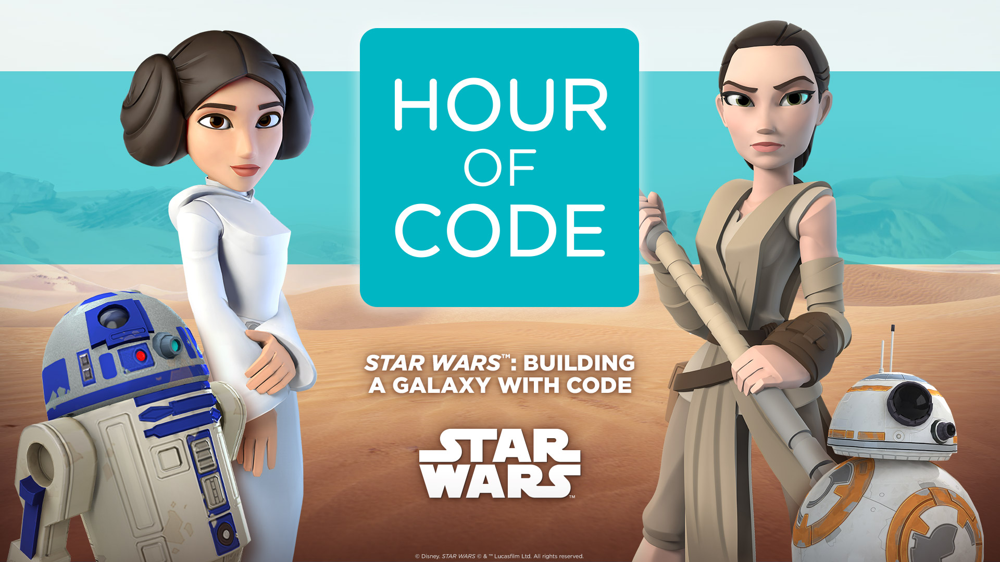
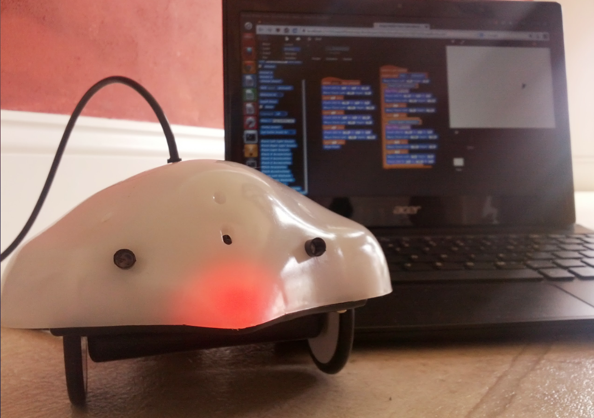

Programming

Throughout the semester we experimented with various languages, and websites that taught how to code.
We started off simple using “Hour of Code” to make sure that everyone one had at the very least some idea of what code was.
We later moved on to Scratch, which I honestly liked much better since it was slightly more advanced, and let us be more creative with it.
Both Scratch and hour of code used very simplified versions of code.
After this, we moved onto python. Python was the one thing where about half the class loved it, while the other half wanted to go back and play with Scratch a little bit more.
We made a simple lottery number generator, and then used a… well I guess to simplify it, let’s call it an add-on, called turtle.
Turtle is an extension of python that lets you create images. Mine can be seen in the highlight section or by clicking here.
Overall, we only went into very basic programming.
Basic Electronics

Most of the semester was spent learning about circuits.
I guess you could say it was the base for the whole course.
We started off simple doing only series circuits, or only parallel circuits, then we moved on to solving combinational circuits.
We learned how to solve circuit problems for combinational circuits, we actually even did a really hard one as a challenge with 9 resistors.
Solving them on paper wasn’t as fun as actually getting to make these circuits though.
We were given breadboards and in pairs we got to make as many circuits as we liked, experimenting with different resistors, and LEDs
Another cool thing we did was learn how to read the resistor colour bands.
Digital Electronics
Similar to Basic Electronics, but not really, we learned about digital electronics.
Basically we learned how to read and write numbers in binary, hexadecimal, and octal which although difficult at first was really cool to learn.
We also learned about logic gates, and Boolean algebra.
While I loved learning about logics gates, and making online stimulations with them, Boolean algebra I admittedly found boring in comparison.
Don’t get me wrong, both were pretty fun to learn, but I personally enjoyed logic gates more than the algebra that came with Booleans.
Overall this unit was very fun though.
Interfacing

The next thing we did in the course was play with these cute little robots called finch.
It was a nice way to combine hardware and software, we even had a finch fight!
We were given pre-made code for the robots that we complied on python, and after that we were allowed to change it to how we wanted.
This is basically was led to the finch fight.
A student managed to combine turtle and finch together, this let us control the robots with arrow keys.
Two students at the time went and tried to unplug the other finch from the computer.
…That’s not as easy as it sounds given that the speed for these things is VERY slow, but regardless some finches got flipped, others were stuck, and overall it was a very fun class.
Web 2.0
The very last thing we did was… well you’re looking at it. It’s this website.
We learned HTML and CSS to end off the course, and yes I guess technically this falls under programming, but Ms Dorosz wanted it was a separate section, I’m not sure why.
Most of the class, me included, had little to no experience coding HTML and we learned off of this really cool website called W3 Schools.
We had about a week and a half to learn and make a website… and make to make it.
I have to say, I’m proud of myself for this though HTML is much simpler than I thought it would be.
Daily Logs
Every single day, we recorded what we did, and our thoughts and opinions on it.
They were our daily logs.
Honestly it got very repetitive after the first few weeks but looking back it now, it’s helped me make this website.
I guess this would be considered the final daily log.
The log to end all logs!
The website is meant to tie in everything we did in the year, reflect on it, and tie it all back up.